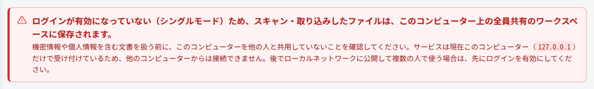
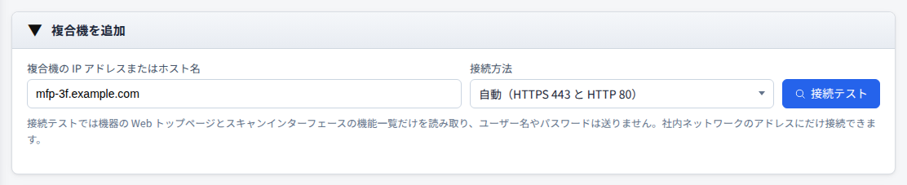
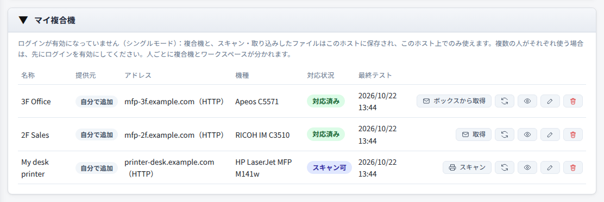

複合機スキャン・取り込み（シングルモード）
ログインが無効の場合、全員が同じワークスペースを共有します。このシステムを複数の人が使うサーバーとして運用しているのにログインを有効にしていないと、サイトにアクセスできる人なら誰でもスキャン・取り込みしたファイルを見られるため、機密情報や個人情報を含む文書は漏えいしたのと同じです。複数の人で使う場合は、先にログインを有効にしてください。
ログインは無効で、サービスはこのコンピューター（127.0.0.1）だけで受け付け、自分ひとりだけが使います。
自分のコンピューターから複合機でスキャンしたり、複合機に保存された文書を取り出したりして、このコンピューターのワークスペースに保存します。アカウントも管理者による設定も不要です。
使用前の確認
始める前に、次の 4 点を確認してください。
ログインが無効の場合、ワークスペースはアカウントごとに分かれません。このコンピューターを他の人も使うと、自分がスキャン・取り込みしたファイルを見られてしまいます。
インストール時にローカルネットワークへ公開しないことを選びます（サービスは 127.0.0.1 からの接続だけを受け付けます）。すでに公開している場合は sudo jtdt bind 127.0.0.1 を実行します（Windows では管理者として jtdt bind 127.0.0.1 を実行）。
アドレスは http://127.0.0.1:8765/tools/mfp-fetch/ です。ログインが無効の場合、このツールはこのコンピューター上でしか使えず、他のコンピューターからの接続は拒否されます。
このコンピューターから複合機の IP アドレスまたはホスト名に接続できる必要があります。このサイトは社内ネットワークのアドレスにしか接続しません。

複合機の追加
複合機のアドレスを入力し、接続テストに通ったら保存すると、「マイ複合機」に表示されます。
- 1
アドレスを入力
「複合機を追加」に IP アドレスまたはホスト名を入力します。接続方法は「自動」のままにすると、HTTPS 443 と HTTP 80 の両方に接続できる場合は 443 を使います。
- 2
接続テスト
「接続テスト」を押します。トップページとスキャン機能の情報を読むだけで、認証情報は送りません。結果にはメーカー、機種、この複合機でできることが表示されます。
- 3
保存
機種を確認して「この複合機を保存」を押します。



このサイトからスキャン
eSCL 対応の複合機（対応状況が「スキャン可」）は、このサイトから直接スキャンを指示できます。
- 1
原稿をセット
文書を複合機の原稿台ガラスまたは原稿送り装置にセットします。
- 2
スキャン設定を選ぶ
一覧で「スキャン」を押し、原稿の場所、カラー、解像度、用紙、保存形式を選びます。
- 3
スキャン開始
「スキャン開始」を押します。1 台の複合機は一度に 1 件ずつ処理し、ほかは自動で順番待ちになります。
- 4
ワークスペースに保存
スキャンしたファイルはワークスペースに保存され、開く、ダウンロードする、他のツールで続けて処理する、ができます。


複合機に保存された文書の取り出し
まず複合機のパネルで文書をボックス、ドキュメントサーバー、または文書ボックスに保存し、このサイトで「取得」を押します（FUJIFILM は「ボックスから取得」）。
- 1
複合機に保存
メーカーに応じて、操作パネルでボックス、ドキュメントサーバー、文書ボックスへの保存を選びます。
- 2
サインイン情報を入力
パネルの表示に合わせてボックス番号、アカウント、User Code を入力します。送信は一度だけで、誤っていればそこで止まります。
- 3
一覧表示と場所の選択
「ファイルを表示」を押します。フォルダーは「位置」で切り替え、パスワード付きのフォルダーはパスワードを入力して「フォルダーを開く」を押します。
- 4
選んで取得
必要な文書を選び、PDF（推奨）を選んで「取得」を押すと、ファイルがワークスペースに保存されます。


メーカー別の取り出し方法と検証済みの機種は、複合機スキャン・取り込みガイドをご覧ください。
ファイルの保存先
スキャン・取り込みしたファイルはワークスペースにあり、開く、ダウンロードする、他のツールで直接選ぶ、ができます。
スキャン・取り込みしたファイルはこのコンピューターに保存され、クラウドサービスを経由しません。
期限が来ると自動的に削除されます。保存期間と容量は「設定 → ワークスペース設定」で変更します。使い終わったファイルは先に削除できます。
文書の一覧表示と取り込みでは、複合機上の原本は変更されません。FUJIFILM で「取得して削除」を選んだときだけ、保存を確認してから削除します。
複数人で使う場合
シングルモードにはアカウントがないため、複数人での利用には向きません。
ログインを有効にすると、人ごとに複合機の一覧とワークスペースが分かれ、管理者は共有複合機を設定してメンバーを指定できます。設定方法は複合機スキャン・取り込みガイドをご覧ください。
よくある質問
問題が解決しないときは、まずこちらをご覧ください。
他のコンピューターで開くと、このホスト上でしか使えないと表示される
ログインが無効の場合、このツールはシステムをインストールしたコンピューター上でしか使えません（アドレスは 127.0.0.1 または localhost）。他のコンピューターから使うには、先にログインを有効にしてください。
赤い警告に、サービスがネットワークからの接続を受け付けていると表示される
サービスがネットワークのアドレス（例：0.0.0.0）にバインドされているため、他のコンピューターからこのサイトとワークスペースにアクセスできます。自分だけが使う場合は sudo jtdt bind 127.0.0.1 を実行してください（Windows では管理者として jtdt bind 127.0.0.1 を実行）。複数人で使う場合は、先にログインを有効にしてください。
接続テストに失敗する、ファイルが表示されない
接続テストのステップごとの診断を見て、失敗したステップから確認します。診断レポートもダウンロードできます。KYOCERA は複合機で 9091 または 9090 番ポートの文書サービスを有効にする必要があります。FUJIFILM のあるポートが 406 を返す場合は、別の接続方法に切り替えてください。
RICOH のフォルダーにパスワードが必要
「位置」でそのフォルダーを選び、フォルダーのパスワードを入力して「フォルダーを開く」を押します。誤ったパスワードは自動で再試行しないので、確認してからもう一度入力してください。
問題を報告する
「技術的な詳細」を開いて「プロトコルログをコピー」を押し、GitHub で Issue を作成するときに添付します。プロトコルログにはアカウント、パスワード、文書の内容は含まれません。報告先：GitHub Issues。